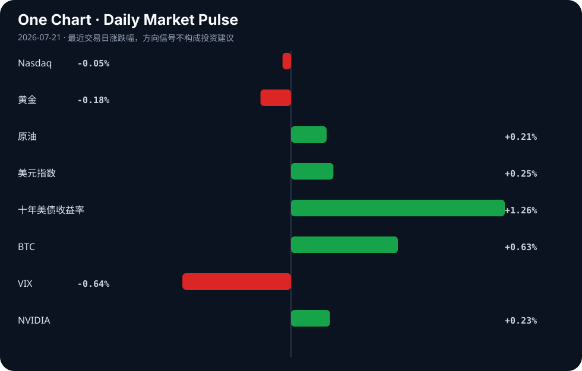

Daily Intelligence
2026-07-21｜Tuesday
Today’s Thesis｜今日一句话
AI 正从“通用能力演示”转向“受约束场景的渗透”，其经济价值的释放高度依赖基础设施（算力/能源）与治理规则的同步，而非模型本身的单点突破。
① Executive Summary｜30 秒
- AI：模型免费化趋势确立 [A22]，但生产力释放卡在工人技能与基础设施（如数据中心立法）[A2][A12]，具身智能开始进厂替代体力劳动 [A8]。
- 商业：中国制造业以 AI 为新引擎对冲宏观放缓 [A18][B21]，但汽车等行业面临“海外热、国内冷”的结构性分化 [B3]。
- 宏观：全球经济逼近急剧放缓 [B7]，套息交易在鹰派日银与干预风险下博弈 [B5]，产业政策从追求完美转向需要塑性 [B19]。
② AI Daily
AI 模型免费化与生产力瓶颈
What Happened：强大的 AI 模型正被免费提供 [A22]，但研究指出 AI 生产力取决于工人而非仅靠技术 [A12]。 Why It Matters：模型本身不再是护城河，人机协同能力与工作流重构才是价值捕获点。 Second-order Effect：模型免费 → 企业 IT 支出重估 → 垂直场景集成商获利。
具身智能与 AI 的体力革命
What Happened：WAIC 展示具身智能抢进工厂，AI 从“能动”变“有用” [A8][A20]。 Why It Matters：AI 脑力革命后，体力革命开启，直接替代蓝领劳动力并重构工业资产可靠性 [B17]。 Second-order Effect：具身智能进厂 → 制造业劳动力结构重塑 → 机器人运维与保险需求激增。
AI 治理与基础设施的约束
What Happened：全球南方寻求 AI 治理新选项 [A3]，佛罗里达立法限制数据中心对公用事业成本的影响 [A2]，联邦政府计划建大型数据中心 [A13]。 Why It Matters：AI 发展受制于能源成本与规则制定，治理不再是滞后补丁而是前置条件。 Second-order Effect：算力能耗激增 → 政策/电网约束收紧 → 核能/碳捕集等替代能源获增量需求 [B4][B15]。
③ Business Daily
制造
上海人工智能制造业增长 21.8% [A18]，AI 成为中国经济防硬着陆的新引擎 [B21]。海尔智家全面 AI 化或带来估值重构 [A11]，标志着传统制造龙头正通过 AI 渗透率重获定价权。
能源
算力需求推动能源基础设施演变。联邦政府拟建大型数据中心 [A13]，佛罗里达通过立法控制数据中心电费 [A2]。同时，德州推进核能 [B15]，重工业碳捕集技术加速 [B4]，储能系统甚至被用于导弹防御 [B23]，能源与算力的绑定日益加深。
自动驾驶
中国汽车工业在海外高歌猛进，但国内销量暴跌 [B3]，呈现典型的产能输出依赖。UKM 整合 BlackBerry QNX 课程培养自动驾驶底层系统人才 [B6]，暗示车载 OS 等软基建正成为下一轮竞争焦点。
④ Macro Observation｜机制分析
世界正在发生什么？ 全球经济正走向急剧放缓 [B7]，但 AI 制造业和套息交易呈现局部高温 [A18][B5]。
为什么发生？ 宏观信用周期见顶，但 AI 资本开支与套息交易（USD/JPY 达 40 年高位）制造了结构性分化 [B5][B21]。资本在总量收缩中寻找技术增量与利差套利。
资本如何流动？ 资本正从传统内需（如中国汽车国内销量暴跌 [B3]）流出，流向 AI 算力基建（数据中心 [A13]）、边缘智能 [B24] 及对冲资产。产业政策从追求完美转向需要塑性 [B19]，以适应这种非均衡流动。
接下来关注什么？ 套息交易逆转的脆弱性 [B5]。若日银干预引发套息平仓，风险资产将承压；同时需验证 AI 投资能否在宏观放缓中维持反身性正循环。
*(事实：穆迪预警全球放缓 [B7]，USD/JPY 在 162.40 附近 [B5]；推断：AI 投资可能对冲部分宏观下行，但若套息逆转，风险资产将承压)*
⑤ Signal Dashboard
| 指标 | 最新值 | 今日 | 信号 |
|---|---|---|---|
| Nasdaq | 25,508.07 | → -0.05% | 中性 |
| 黄金 | 4,005.60 | ↓ -0.18% | 中性 |
| 原油 | 82.66 | ↑ +0.21% | 供需平衡 |
| 美元指数 | 101.00 | ↑ +0.25% | 金融条件偏紧 |
| 十年美债收益率 | 4.60 | ↑ +1.26% | 成长估值承压 |
| BTC | 65,100.01 | ↑ +0.63% | 风险偏好改善 |
| VIX | 18.65 | ↓ -0.64% | 市场稳定 |
| NVIDIA | 203.28 | ↑ +0.23% | 中性 |
⑥ Deep Insight
AI 的叙事长期被算法突破主导，但 2026 年的转折点在于：AI 的扩张速度已触及物理世界的硬约束——能源与治理。当强大的 AI 模型被免费开放 [A22]，软件的边际成本趋近于零，但运行这些模型的物理基础设施（数据中心）的边际成本却在急剧上升。佛罗里达州议员提出立法以确保 AI 数据中心不会推高居民公用事业成本 [A2]，这揭示了一个被忽略的机制：算力正在与民生争夺电力配额。联邦政府计划在萨凡纳河遗址建设大规模数据中心 [A13]，并非单纯的技术布局，而是能源禀赋与算力需求的妥协。
这形成了一个强烈的反身性循环：AI 繁荣 → 算力/能耗需求激增 → 电网与政策约束收紧（如佛罗里达立法）→ 数据中心选址与核能/碳捕集技术获增量 [B4][B15] → AI 发展路径被迫向低能耗边缘计算或受监管行业妥协 [A21][B24]。资本正在对这一循环进行定价：边缘 AI 软件市场因能缓解云端算力与能耗压力而加速增长 [B24]，而传统能源体系为了承接算力溢出，不得不向核能和新型碳捕集寻求解法 [B4][B15]。
同时，全球南方寻求 AI 治理新选项 [A3]，以及针对未成年人 AI 玩具的立法 [A10]，表明治理不再是滞后补丁，而是与技术平行的前置变量。当 AI 试图从“能动”转向“有用” [A20]，它必须嵌入受监管的专业工作流 [A21] 和物理制造环节 [A8]。这意味着 AI 的未来不取决于模型能有多聪明，而取决于社会允许它消耗多少度电、干预多少现实流程。产业政策若缺乏应对这种技术突变的“塑性” [B19]，将导致基础设施与前沿模型之间的错配，进而引发算力通胀或算力闲置。
反方观点认为，算法效率的提升（如模型免费化 [A22]）将大幅降低单位算力能耗，使能源约束被技术进步自然消解。此外，全球经济的急剧放缓 [B7] 可能自发抑制算力总需求的扩张，从而缓解电力紧张。
证伪条件：若未来 1-2 年内，单位 token 推理能耗下降速度持续快于算力总需求增速，且电网扩容无需政策博弈即可自发吸收数据中心增量，则物理约束论失效；反之，若数据中心电价成为核心成本变量并反映在科技巨头财报中，则该机制成立。
⑦ Tomorrow Watch
1. 验证 USD/JPY 在 162.40 附近是否触发日本央行实质性干预 [B5]。
2. 追踪佛罗里达州 AI 数据中心公用事业立法的后续审议进展 [A2]。
3. 关注萨凡纳河遗址大规模数据中心的环评与立项动态 [A13]。
4. 观察中国汽车国内销量持续暴跌是否引发新一轮内需刺激政策 [B3]。
5. 验证边缘 AI 软件市场在 5G 与工业自动化驱动下的季度增速是否兑现 [B24]。
⑧ One Chart

图表反映了各类资产在宏观放缓预期与局部 AI/套息热度交织下的定价分歧。十年美债收益率上行与 VIX 下行并存，显示市场在流动性收紧预期中仍维持短期乐观，但这并非因果，而是不同交易主逻辑的短暂均衡。⑨ Quote of the Day
“Plans are worthless, but planning is everything.”
— Dwight D. Eisenhower
中文理解：计划本身常会失效，但规划过程能让你理解约束、选项和应对路径。
Why it matters today：这句话不是装饰，而是今天观察 AI、商业和宏观变化时的一个思考框架：先看机制，再看价格；先看约束，再看叙事。
⑩ Action Items｜今天值得思考什么
1. 追踪 AI 模型免费化后，垂直行业集成商（如海尔智家 [A11]）的利润率变化。
2. 验证具身智能进厂对制造业劳动力成本的实质性替代率 [A8]。
3. 比较中美在 AI 基础设施上的政策约束差异（佛罗里达立法 vs 上海制造业增长）[A2][A18]。
4. 关注套息交易在鹰派日银下的脆弱性，评估其对成长估值的潜在冲击 [B5]。
5. 思考产业政策的“塑性”如何适应 AI 技术突变的非连续性 [B19]。
信息边界
本报告新闻来源覆盖中美英及全球南方主流聚合源，时效截至 2026 年 7 月 20 日晚间。市场数据为最近交易日收盘值。由于新闻多为二手聚合，重要立法与政策判断需读者回到原文验证进展。
Sources
AI
- A2：Florida GOP lawmaker and governor candidate says AI data center legislation keeps utility costs down - The Washington Post — Google News · AI
- A3：全球南方迎来AI治理新选项 - 中国经济网 — Google News · AI 中文
- A8：直击WAIC｜具身智能抢进工厂，营销智能体重构工作流⋯⋯AI的“体力”与“脑力”革命走到哪一步了？ - 每日经济新闻 — Google News · AI 中文
- A10：Rep. Blake Moore proposes legislation to regulate toys with artificial intelligence for minors - Cache Valley Daily — Google News · AI
- A11：海尔智家全面AI化或带来估值重构 - 新浪财经 — Google News · AI 中文
- A12：AI Productivity Depends on Workers, Not Just Technology - ColombiaOne.com — Google News · AI
- A13：Feds look to build massive data center at Savannah River Site - WRDW — Google News · AI
- A18：上海人工智能制造业增长21.8%，在WAIC现场找到原因 - 第一财经 — Google News · AI 中文
- A20：看见未来！人工智能要从“能动”变“有用” - 新浪网 — Google News · AI 中文
- A21：How AI Is Reshaping Regulated Professional Workflows - Emerj Artificial Intelligence Research — Google News · AI
- A22：Opinion | Powerful AI models are being given away for free. It was inevitable. - The Washington Post — Google News · AI
Business & Macro
- B3：China’s car industry is on a tear overseas. So why are sales at home plunging? - South China Morning Post — Google News · Global Economy
- B4：The new carbon capture method stepping up to tackle heavy industry - The World Economic Forum — Google News · Global Economy
- B5：USD/JPY Grinds Near 162.40 at a 4-Decade High — the Carry Trade Battles a Hawkish BoJ and Intervention Risk - TradingNEWS — Google News · Markets Policy
- B6：UKM first in ASEAN to integrate BlackBerry QNX curriculum, targeting future-ready tech talent - Indiatimes — Google News · Global Economy
- B7：Global economy tipping towards a sharp slowdown, India 'may lose a step' too: Moody's Analytics - MSN — Google News · Global Economy
- B15：University of Houston Joins Texas Nuclear Alliance to Advance the Future of Nuclear Energy - University of Houston — Google News · Technology Business
- B17：Plant.Digital Selects Quest Global as a Strategic Partner to Accelerate AI Driven Asset Reliability and Integrity Across the GCC Region - PR Newswire — Google News · Technology Business
- B19：Industrial Policy Needs Plasticity, Not Perfection – OpEd - Eurasia Review — Google News · Global Economy
- B21：AI is ‘new engine’ keeping Chinese economy from harder landing - Taipei Times — Google News · Global Economy
- B23：US-Based Innovator in Energy Storage Selected to Power Missile Defense System - The Well News — Google News · Technology Business
- B24：Edge AI Software Market Growth Accelerates as 5G, IoT and Industrial Automation Enable Real-Time Intelligence - GlobeNewswire — Google News · Technology Business